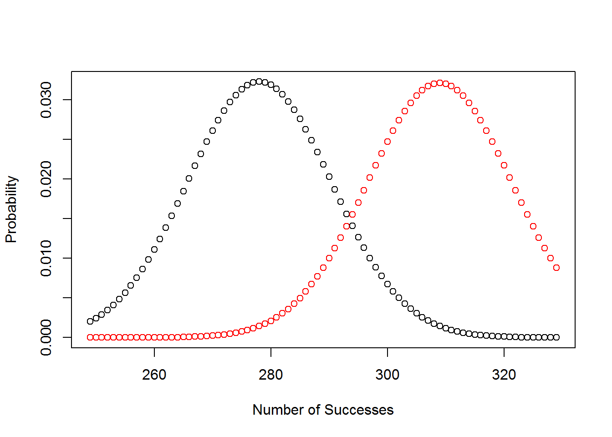

2.5 Introduction to Hypothesis Testing
2.5.1 Objectives
- Correctly use all new terminology and definitions to include: statistic, test statistic, p-value, Type I error, Type II error, power, null hypothesis, and alternative hypothesis
- Conduct a statistical hypothesis test using the four steps introduced in the book
- Conduct a power analysis
2.5.2 Hypotheses Testing
Hypothesis testing is difficult to understand and requires thought and practice. The examples in the book are good and detailed. I am going to simplify the example here to help learn the definitions, but you must then wrestle with the examples in the book. I am going to use a simple hypothesis where as the book is using a complex.
I am going to generate a random sample from a binomial where the number of trials is 100. The probability of success is either .45 or .5 and your job is empirically test which value you think I used based on the data. First let’s practice the command rbinom. To get sample I could do the following commands, I set the seed to make sure I can repeat the results.
(temp<-rbinom(100,1,.45))## [1] 0 0 0 0 0 0 1 0 1 0 0 1 1 1 1 1 0 1 1 1 0 1 0 0 1 0 0 1 1 0 0 1 0 0 0
## [36] 1 0 0 1 0 1 1 1 1 1 0 1 0 0 1 0 0 0 1 1 1 0 1 0 0 0 0 1 0 0 0 1 1 0 0
## [71] 0 0 1 0 0 0 1 0 0 0 0 1 0 0 0 1 1 0 0 0 1 0 0 1 0 1 0 0 1 1sum(temp)## [1] 41Note: A success is a 1 and a failure is a 0.
Thus in this random process, I had 41 successes out of 100 trials. This is a binomial because each trial is independent, the probability of success is constant, the trial are fixed, and each trial has two outcomes.
I could have also done
rbinom(1,100,.45)## [1] 38For interest what would rbinom(10,100,.45) give you?
I will generate a sample with the probability of success as either .45 or .50. You must decide which you think it is.
2.5.2.1 Step 1: State the null and alternative hypotheses
State the null and alternative hypothesis. In practice, the alternative is set to the condition that you want to demonstrate. This is similar to a criminal trial where you are the prosecutor and you want to show that the accused is guilty. The null is that the accused is innocent and the alternative is that they are guilty.
For this artificial problem, it is not clear what the alternative should be. Thus we will select the alternative as the probability of success is 0.5. The hypotheses are:
\[H_{o}: \pi = 0.45 \] \[H_{a}: \pi = 0.50 \]
Here \(\pi\) is the unknown population parameter probability of success.
2.5.2.2 Step 2: Calculate a test statistic
We run 100 trials and get
## [1] 49successes.
The estimate of the probability of success 49/100 or 0.49. We will learn more about these types of estimates. They are called point estimates.
We could have many different test statistics and the choice is important for analysis. We will discuss properties later in the course. But two examples of test statistics are the proportion of success 0.49 and the number of success 49. We will use the number of successes. The statistic is the number of successes, a random variable, and the test statistic is 49.
2.5.2.3 Step 3: Compute the p-value
The definition of p-value is a conditional probability. Given that null hypothesis is true, what is the probability of the data or more extreme. The difficult part is what is meant by more extreme. Our statistic is the number of successes out of 100 trials. It is a binomial.
Before we calculate the p-value, let’s think about how we could decide whether we believe that the data comes with the probability of success equal to .45 or 0.50. It seems that since .49 is closer that we think it should be 0.50. Let’s plot the probability mass function for each case.
plot((30:70),dbinom((30:70),100,.45),type="p",xlab="Number of Successes",ylab="Probability")
points((30:70),dbinom((30:70),100,.5),type="p",col=2)
abline(v=49)
Notice the use of dbinom in this code.
One way to decide is to pick a rejection region where the probability of that number of successes is higher under each different value of the probability of success. We can find these by creating a table.
prob_table<-rbind(dbinom((40:60),100,.45),dbinom((40:60),100,.5))
colnames(prob_table)<-(40:60)
row.names(prob_table)<-c("Prob = 0.45","Prob = 0.50")
prob_table## 40 41 42 43 44
## Prob = 0.45 0.04880290 0.05843363 0.06716073 0.07411819 0.07855915
## Prob = 0.50 0.01084387 0.01586907 0.02229227 0.03006864 0.03895256
## 45 46 47 48 49
## Prob = 0.45 0.0799875 0.07824864 0.07355675 0.06645184 0.05769844
## Prob = 0.50 0.0484743 0.05795840 0.06659050 0.07352701 0.07802866
## 50 51 52 53 54
## Prob = 0.45 0.04815197 0.03862458 0.02977874 0.02206589 0.01571359
## Prob = 0.50 0.07958924 0.07802866 0.07352701 0.06659050 0.05795840
## 55 56 57 58 59
## Prob = 0.45 0.01075277 0.007069597 0.004465009 0.002708399 0.001577465
## Prob = 0.50 0.04847430 0.038952560 0.030068643 0.022292270 0.015869073
## 60
## Prob = 0.45 0.0008819463
## Prob = 0.50 0.0108438667Based on this table, if we have 47 or less successes, we should fail to reject that \(\pi = 0.45\) while 48 or more means we reject \(H_{o}\) in favor of \(H_{a}\). We use the fail to reject instead of accept just like we use not guilty instead of innocent. This idea of finding a cutpoint number is called the rejection region. Using the test statistic of 49, which is greater than 47, we would reject \(H_{o}: \pi = 0.45\) in favor of \(H_{a}: \pi = 0.50\).
Another, and more common, method to determine the rejection region is to find the quantile associated with a small probability. This probability is called the significance level and is usually set to 0.05. It turns out it is the probability of rejecting when the null is true. In this case we want to find the number of successes such that having that value or more extreme leads to a probability of 0.05. Why 0.05? This is unusual enough that we think that if it happens we conclude the null is not true. It is a sort of empirical proof by contradiction. Since we will reject \(H_{o}: \pi = 0.45\) in favor of \(H_{a}: \pi = 0.50\) only if the number of success is larger than the rejection value, we want the 0.05 probability to be in the upper tail. Thus we can use qbinom.
qbinom(.95,100,.45)## [1] 53Just to check
1-pbinom(52:53,100,.45)## [1] 0.06617290 0.04410701Since the distribution is discrete, we cannot find a quantile that will give us exactly 0.05 in the upper tail. We have a choice. If we reject when the number of successes is 53 or greater then percentile is 0.066. Likewise if we use 54 or greater, then the percentile is 0.044. I will go with the second because it is conservative. This choice has to do with a Type I error, which we will discuss shortly.
Based on this rejection region and the data, we fail to reject \(H_{o}: \pi = 0.45\) in favor of \(H_{a}: \pi = 0.50\).
The p-value is a similar idea but takes the context of the problem out of the decision. Under the null hypothesis, the probability of success is 0.45. To find the p-value, we calculate the probability of the data or more extreme under the null hypothesis. More extreme means further from the null and more towards the alternative. Thus for us we want to find \(P(X \geq 49)\) which using R is
1-pbinom(48,100,.45)## [1] 0.2404266pbinom(48,100,.45,lower=FALSE)## [1] 0.2404266Since this is larger than our significance level of 0.05, we fail to reject \(H_{o}: \pi = 0.45\) in favor of \(H_{a}: \pi = 0.50\).
Which test is better, one rejected and the other did not? It is beyond the scope of this course, but is based on the idea of finding uniformly most powerful tests.
2.5.2.4 Draw a conclusion
Based on our data of 49 successes in 100 tries, under the null that the probability of heads is 0.45 we found the probability of 49 or more heads is 0.2404 which is greater than 0.05. Thus we fail to reject \(H_{o}: \pi = 0.45\) in favor of \(H_{a}: \pi = 0.50\).
2.5.3 More terms - Errors
We can make two types of error. We can reject when the null is true. This is a type I error. The probability of this is the significance level, usually called \(\alpha\). Formally, the probability of a type I error is P(reject|null hypothesis is true). We pick this value as part of the test design. This is why we put what we are trying to show in the alternative because we are trying to reject the null and we can control the type I error.
The second type of error is called the type II error, yes these are poor names. Sometimes type I error is called a false positive, and type II a false negative. The type II error is when we fail to reject but the alternative is true. In practice this is difficult to calculate because the alternative is often a complex hypothesis and we don’t have a value for the parameter under the alternative. But because I chose a simple alternative, we can easily find the probability of a type II error. The probability of a type II error is P(Fail to reject|Alternative hypothesis is true). Based on the work we did above, we reject when the number of successes is 54 or greater. The probability of a type II error thus is
pbinom(53,100,.5)## [1] 0.7579408For our problem, since we failed to reject, the probability of a type II error is large. Typically we want it at 0.2 or smaller. For this problem that means a larger sample size is required. The calculation of sample size should have been done prior to the test.
The complement of a type II error is called power and it is the probability we reject given the alternative is true. Again, since we are setting up in the hopes of rejecting, power is a useful metric. For this problem, power is
1-pbinom(53,100,.5)## [1] 0.24205922.5.4 Sample Size
Instead of 100 trials how many should we have done? Using an \(\alpha\) of 0.05, this is my type II error and a power of at least 0.80. Let’s find the number. As a start, say the sample size is 200. Then the rejection region is
qbinom(.95,200,.45)## [1] 102And the power is
1-pbinom(102,200,.5)## [1] 0.3618855We are going to need a large sample. Next let’s try 800 trials.
qbinom(.95,800,.45)## [1] 383And the power is
1-pbinom(383,800,.5)## [1] 0.8783484That is more like it. I think we can write a function to help us.
simple_sample_size<-function(n=100){1-pbinom(qbinom(.95,n,.45),n,.5)}Now for a range of values
temp<-sapply((600:625),simple_sample_size)
names(temp)<-(600:625)
temp ## 600 601 602 603 604 605 606
## 0.7810158 0.7685830 0.7806348 0.7922992 0.7802553 0.7919132 0.7798774
## 607 608 609 610 611 612 613
## 0.7915286 0.7795009 0.7911456 0.7791259 0.7907640 0.7787524 0.7903839
## 614 615 616 617 618 619 620
## 0.7783803 0.7900052 0.7780097 0.7896280 0.8008639 0.7892522 0.8004829
## 621 622 623 624 625
## 0.7888779 0.8001033 0.7885049 0.7997251 0.7881334So it looks like around 618 trials would work for use. Let’s plot
plot((249:329),dbinom((249:329),618,.45),type="p",xlab="Number of Successes",ylab="Probability")
points((249:329),dbinom((249:329),618,.5),type="p",col=2)
2.5.5 Complex Hypothesis
The book goes through an example so we will keep it short here. Suppose our hypotheses were
\[H_{o}:\pi=.45\] \[H_{o}:\pi\neq.45\]
The alternative is complex because it takes on many values. This particular test is two-sided and is the most common. A one-sided test can only be done if apriori you have knowledge that the parameter will be on one side of the null hypothesized value.
To conduct this test, we can use the function binom.test.
binom.test(49,100,p=.45,conf.level = .05)##
##
##
## data: 49 out of 100
## number of successes = 49, number of trials = 100, p-value = 0.4235
## alternative hypothesis: true probability of success is not equal to 0.45
## 5 percent confidence interval:
## 0.4819244 0.4981442
## sample estimates:
## probability of success
## 0.49Again, we fail to reject.
To find power, you need a specified difference or size of effect that you think is practically important, usually from a subject matter expert. Let’s say that expert wants to detect a difference of 0.05, this is called the effect size. We now need a value for the alternative. We could pick either 0.40 or 0.50. Let’s go with 0.50. You could do both and report the two power calculations back to the decision maker.
Since it is a two-sided test, we need to split the significance level between both tails. Thus the critical values, the values that define the rejection region are.
qbinom(.975,100,.45)## [1] 55qbinom(.025,100,.45)## [1] 35Again, since the distribution is discrete, it is unlikely that these values will give us the exact probabilities we want. Let’s check and decide what we want to use.
1-pbinom(54:56,100,.45)## [1] 0.02839342 0.01764065 0.01057105pbinom(34:36,100,.45)## [1] 0.01663269 0.02723630 0.04290071If we reject when we have 34 or fewer heads and 56 or greater heads then the probability of a type I error is
1-(pbinom(55,100,.45)-pbinom(34,100,.45))## [1] 0.03427334This is conservative and less that 0.05. We could adjust a little
1-(pbinom(55,100,.45)-pbinom(35,100,.45))## [1] 0.04487694It is up to you to decide. Let’s go with the second set. We reject if we have 35 or fewer or 56 and greater heads. Now to find power, we calculate the probability of rejecting given that the alternative is true, which we have selected as 0.05.
1-(pbinom(55,100,.5)-pbinom(35,100,.5))## [1] 0.1373853The power is small and thus to detect a difference of 0.05, we need a larger sample size than 100.
For interest, let’s check the power if the alternative were 0.40.
1-(pbinom(55,100,.4)-pbinom(35,100,.4))## [1] 0.1803512